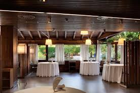
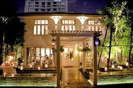
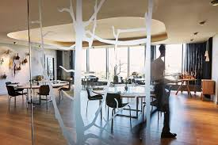
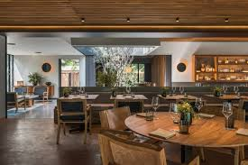
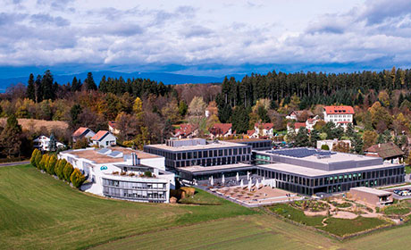

Soy un cocinero, chef y restaurador reconocido por mezclar la cocina tradicional con técnicas y productos foráneos y novedosos y crear la llamada cocina de fusión en España también conocido por unon de los mejores chefs del mundo. Soy un cocinero dedicado, con un historial estelar en el servicio al cliente y una actitud excepcionalmente buena. Habilidoso en el trabajo de alto volumen y ritmo rápido. Capaz de mantener relaciones de trabajo cordiales y profesionales con otros compañeros de trabajo, supervisores y clientes.
Trabajé como chef estrella en el restaurante Mugaritz de 1986 a 1990, el primer restaurante de alto nivel donde desenvolví mis dotes culinarias.

En 1990 me trasladé a Tailandia para trabajar en el prestigioso restaurante Gaggan y en este estuve hasta 1996.

En 1997 decidí trasladarme a uno de los mejores restaurantes del mundo, al Geranium donde aprendí muchas cosas que ahora aplico en mis platos estrella, en el Geranium estuve hata 2005.

En 2008 después de tomarme tres años de meritación me llamaron para trabajar en Pujol, para mi el mejor restaurante de todo México en este estuve hasta el 2018.

Mientras mi estancia en suiza estudié en École Hôtelière de Lausanne es la escuela de hostelería más antigua del mundo. Se centra especialmente en temas de gestión y administración empresarial, pero también dispone de seis restaurantes-escuela en los que se aprende todo lo necesario sobre cocina y servicio de sala.

Cuando era pequeño jugué en el real Madrid de infantiles, pero lo dejé porque me rompí la rodilla y no pude seguir jugando al futbol por eso me puse a hacer la segunda cosa que mas me gusta que es la cocina.